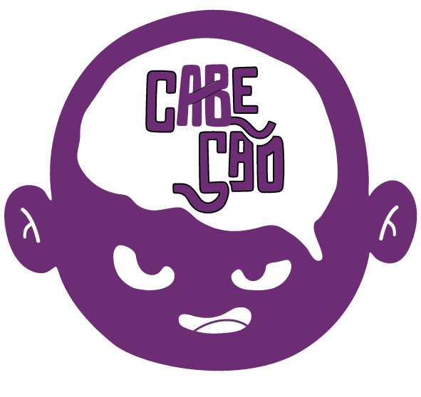
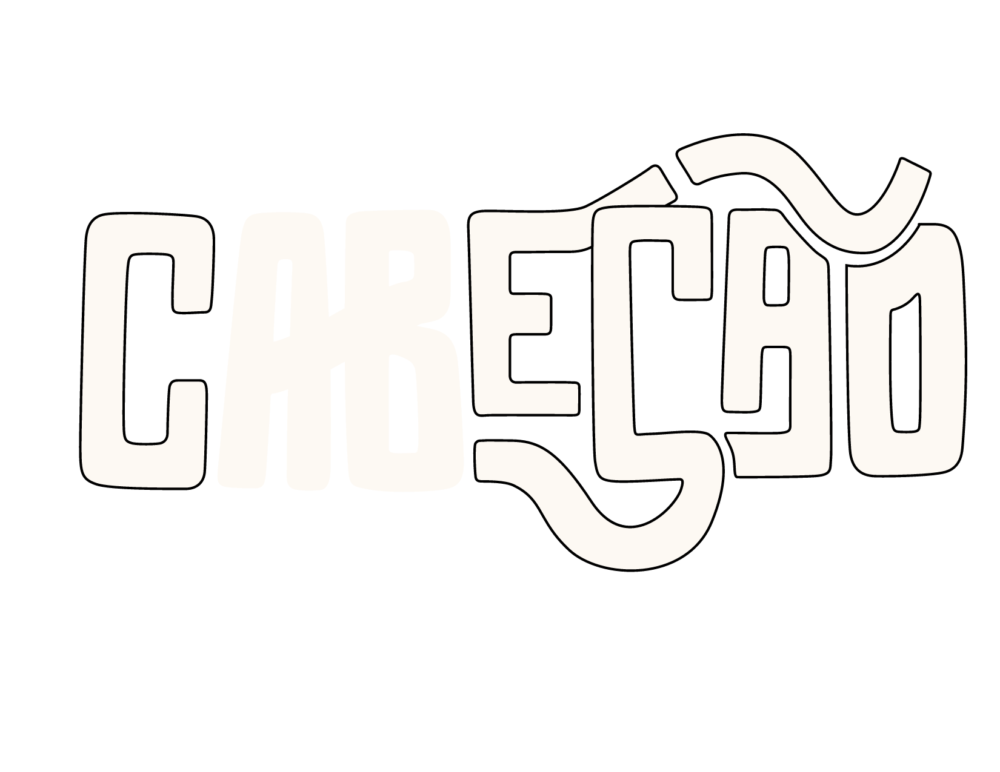
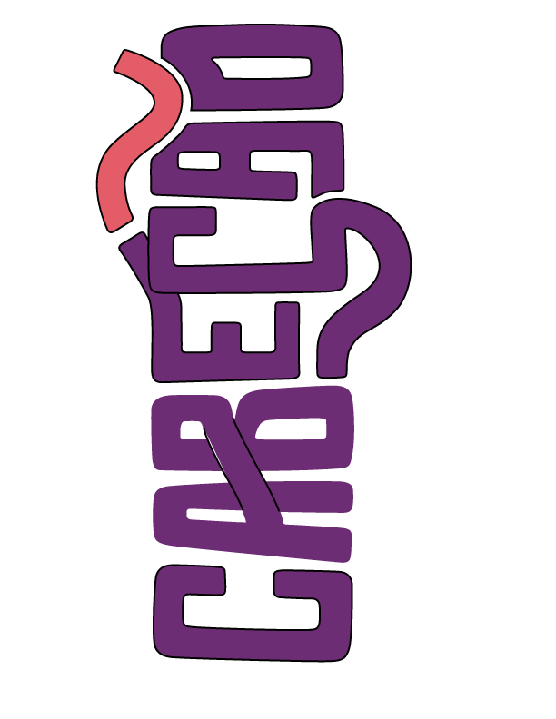
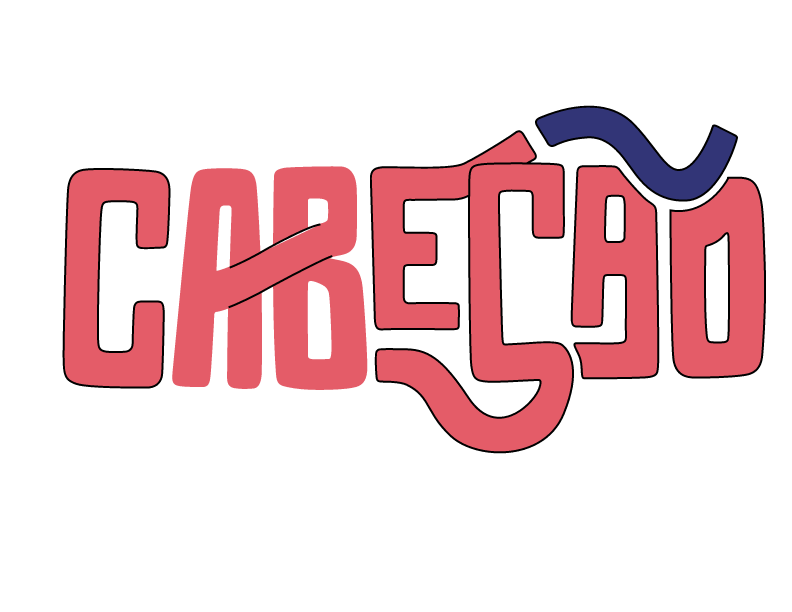

Acertou a carta de Redação? Sorteie abaixo qual dos 3 marcadores (+10 pts) você conquistou nesta rodada:

Todas as cartas descartadas voltarão para seus respectivos baralhos e serão embaralhadas novamente.